上傳 Favicon
從 4.20 版本開始，您可以透過管理後台自動上傳 Favicon（網站圖示）。
Note
若為多商店模式，您需要針對每一間商店重複此上傳程序。
若要上傳 Favicon，請前往 設定 → 設定 → 一般設定。此時會顯示 Favicon 和應用程式圖示 面板：
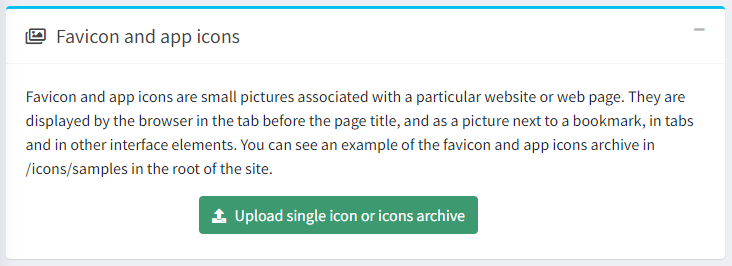
點擊綠色的 上傳單一圖示或圖示壓縮檔 按鈕；隨即會開啟檔案選擇視窗：
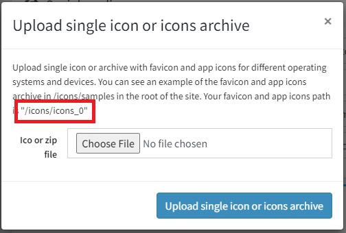
在此處，您需要複製您的圖示路徑（路徑會根據商店與虛擬目錄而有所不同）。例如：
/icons/icons_0。根據您的網站需要支援多樣化裝置的友善程度，有幾種上傳選項：
最完整的選項是使用 Favicon 產生器。在本手冊中，我們將示範使用 RealFaviconGenerator 的範例。透過此服務，只需點擊幾下即可上傳完整的 Favicon 套件。
前往該產生器的首頁，系統會邀請您選擇一張作為 Favicon 的圖片
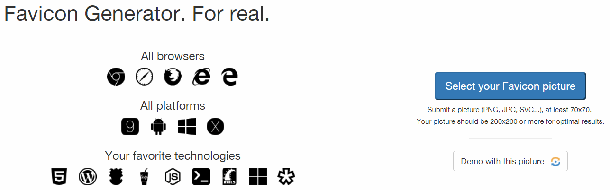
選擇圖片並點擊 Continue with this picture 後，您將被重新導向至下一個頁面。在此頁面，您可以調整特定裝置與應用程式的 Favicon 顯示設定，例如 iOS Web Clip、Android Chrome、Windows Metro、macOS Safari 等。該服務會自動顯示顯示範例，您可以根據需求自訂，或是保留預設值。
在同頁面的底部，您可以找到 Favicon Generator Options 面板。
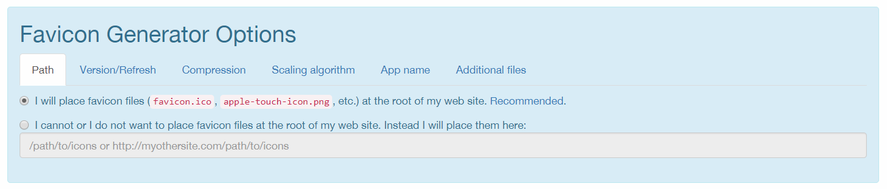
在此區段中，您必須設定特定參數。在 Path 頁籤中，選擇
I cannot or I do not want to place favicon files at the root of my web site. Instead I will place them here選項，並指定步驟 2 中的路徑。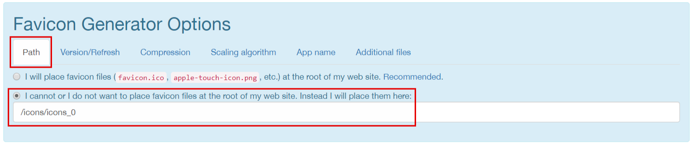
在 Version/Refresh 頁籤中，根據您的網站是否已正式上線來選擇選項。設定描述將會協助您進行判斷。
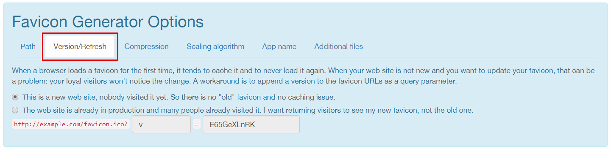
在 Additional files 頁籤中，必須選擇在套件中產生 html 檔案的選項。
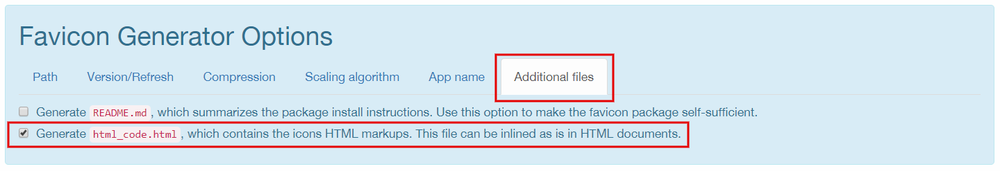
現在所有設定已完成，點擊產生按鈕。
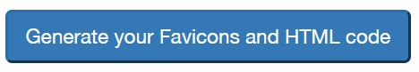
下載您的 Favicon 套件。
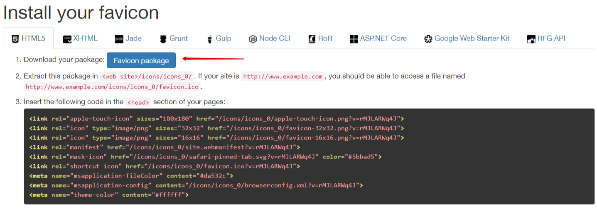
最簡單的選項是僅使用 favicon.ico 檔案，這在各種螢幕解析度的裝置出現之前，已在許多網站上成功使用了很長一段時間。
找到位於
wwwroot/icons/samples/目錄中的範例 Favicon 套件並將其複製。在新的套件中，刪除除了 favicon.ico 和 html_code.html 以外的所有檔案。
將此套件中的 favicon.ico 檔案替換為您新的 Favicon。
編輯 html_code.html 檔案。僅保留該行：
<link rel="shortcut icon" href="/icons/icons_0/favicon.ico">，假設/icons/icons_0是來自步驟 2 的路徑。將這兩個檔案儲存為一個壓縮包。您的 Favicon 套件即已準備就緒。
中間選項是不使用產生器，直接使用完整的 Favicon 套件。
找到位於
wwwroot/icons/samples/目錄中的範例 Favicon 套件並將其複製。在參考原始尺寸的前提下，將新套件中的圖片替換為您自己的圖片。
編輯 html_code.html 檔案，將所有
/icons/icons_0的字串替換為步驟 2 中儲存的路徑。儲存此套件。您的 Favicon 套件即已準備就緒。
帶著準備好的 Favicon 套件回到管理後台進行上傳。選擇所需的檔案並點擊 上傳單一圖示或圖示壓縮檔。
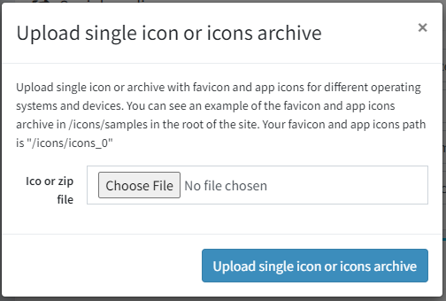
確保您的套件已成功上傳。
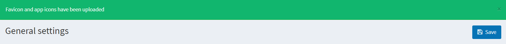
若要在網站上看到新的 Favicon，您應該在管理後台清除快取並清理瀏覽器快取，然後重新載入頁面。
Tip
若要建立 Favicon 套件，您可以使用任何產生器、第三方服務，或是手動製作。唯一的條件是必須包含含有 html 程式碼的 html_code.html 檔案，該程式碼將會被放置於網站頁面的 <head> 元素中。